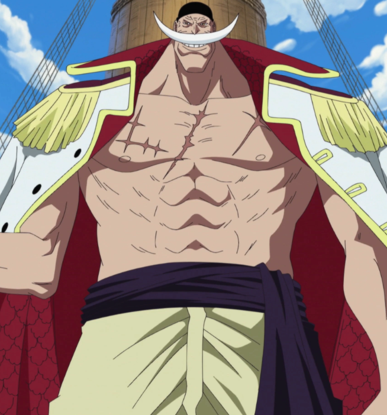
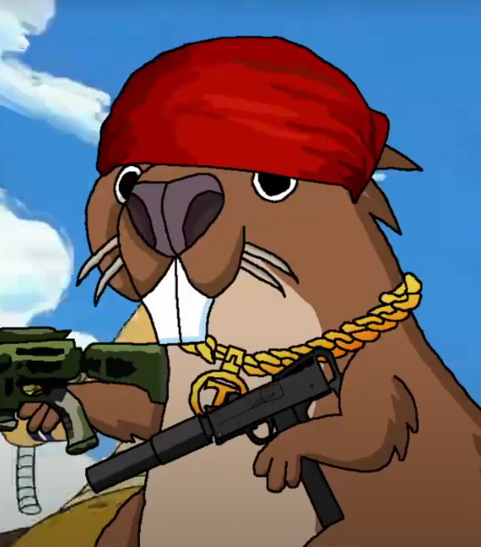
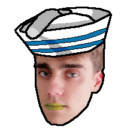
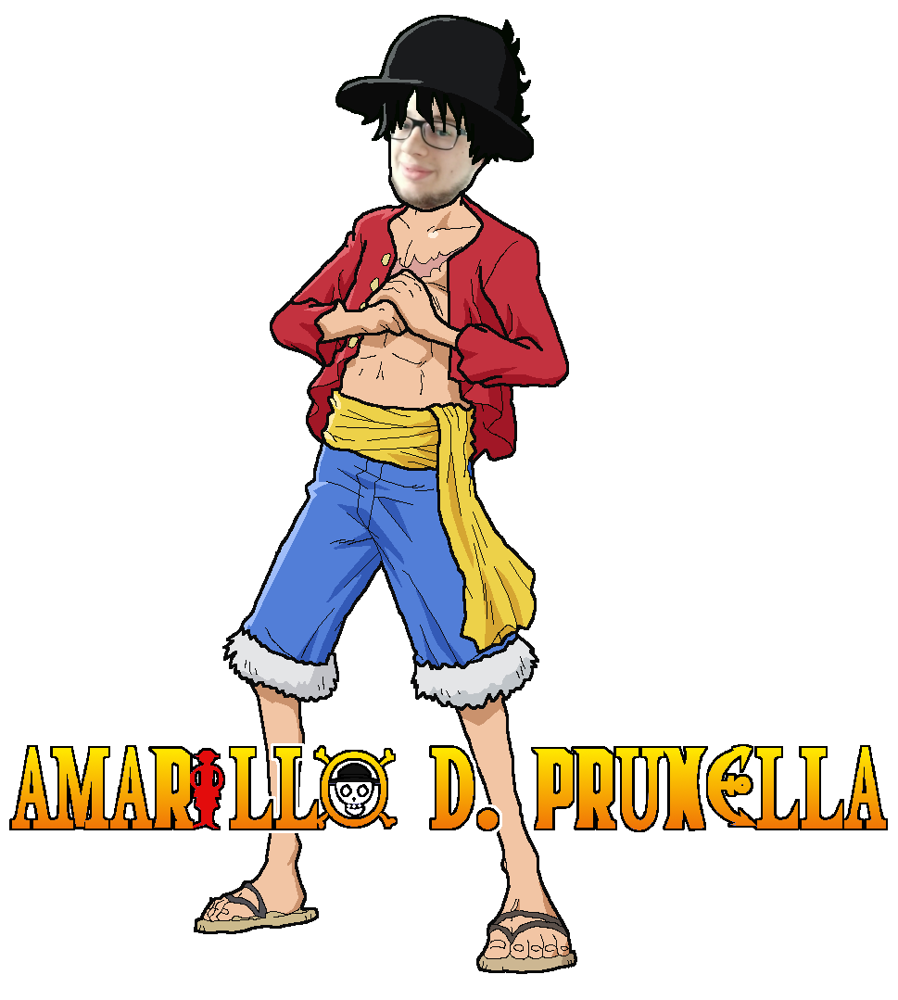
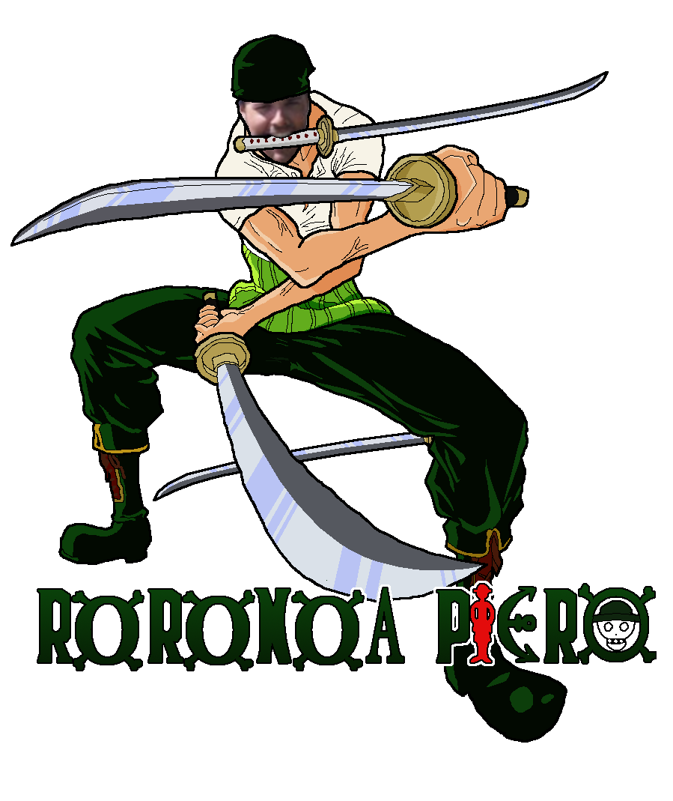

<ng-container *ngIf="loadedWait">
    <!-- overflow-x-hidden -->
    <main class="text-black  font-pirata scroll-smooth opacity-100 ">

        <app-header></app-header>

        <section
            class="bg-quaternary min-h-screen flex flex-col sm:mx-0 md:mx-[20%] p-6 md:px-20 shadow-2xl skew-x-0 md:skew-x-2 shadow-tertiary ">

            <section>
                <div class="flex justify-center gap-10 items-center">
                    
                    <div>
                        <h2 class="text-6xl text-center mb-6 my-10 white">Two Slices</h2>
                    </div>
                    
                    

                </div>
                <h3 class=""></h3>
                <hr class="my-2 style-seven">

            </section>
            <h3 class="text-3xl text-left">Cos'è Two Slices?</h3>

            <section class="grid sm:grid-cols-1 md:grid-cols-2">
                <div class="m-4">
                    <div class="text-xl fadeInClass">
                        <p class="font-corsivo"> Two Slices è il (non ancora) rinomato manga scritto da Saverio "Sbeb" Sintoni e disegnato da
                            Giulio "Gimuz" Montalti, che verrà apprezzato dalla critica per la sua trama originale e
                            atipica! <br>
                            Nasce dall'idea di Saverio di creare un'opera con un'ambientazione mai presa in
                            considerazione prima: i pirati! <br> Dopo un anno di duro lavoro il team di Two Slices sta
                            portando alla luce questo incredibile progetto!
                        </p> <br>
                        <p> </p>
                        <div class="flex justify-center items-center">
                            
                        </div>
                    </div>
                </div>
                <div data-aos="flip-right" data-aos-duration="1000" class="relative m-4 flex justify-center ">

                    
                    
                    

                </div>
            </section>
            <br>
            <hr class="style-seven my-2">
            <h3 data-aos="fade-right" data-aos-offset="120" data-aos-duration="1000"
                class="hidden md:block text-3xl text-right mb-4">
                La storia...</h3>

            <section class="grid sm:grid-cols-1 md:grid-cols-2 mb-4">

                <div data-aos="flip-up" data-aos-offset="350" data-aos-duration="1000"
                    class="relative m-4 flex justify-center">
                    <iframe class="z-10 w-full min-h-[300px] rounded-lg border-4 border-secondary"
                        src="https://www.youtube.com/embed/izoJuJPhdPs" title="Two Slices Opening 1 - Sub Ita"
                        frameborder="0"
                        allow="accelerometer; autoplay; clipboard-write; encrypted-media; gyroscope; picture-in-picture"
                        allowfullscreen></iframe>
                    

                    
                </div>
                <div data-aos="fade-right" data-aos-offset="200" data-aos-duration="1000" class="text-xl ml-5">

                    <h3 class="block md:hidden text-center text-3xl  mb-4">
                        La storia...</h3>
                    <div class="font-corsivo">
                        Pida, parsot e figa. Il miglior pirata nella sua professione aveva ottenuto tutto questo.
                        Le parole che proferì prima di sparire spinsero molti a salpare: "Il mio tesoro? Se lo troverete
                        sarà vostro... Cercatelo! È a Rimini in un tombino dell'Enel!"<br>
                        Così i pirati di tutto il mondo partirono alla volta di Rimini e il mondo entrò nella Grande Era
                        della Riviera Romagnola.
                        <br><br>
                        La storia segue le avventure del giovane pirata Amarillo D. Prunella, che insieme alla sua
                        ciurma,
                        cerca il famoso tesoro Two Slices nella misteriosa Rimini. <br>
                        Riuscirà il nostro eroe a sopravvivere nella città più pericolosa della Romagna e a trovare le
                        leggendarie "Due Fette"?
                    </div>
                </div>

            </section>

            <hr class="my-2 style-seven">
            <h3 id="personaggi" class="text-3xl text-center mb-6 -mt6">Personaggi</h3>
            <section class=" grid grid-cols-2 md:grid-cols-4 gap-5 md:gap-20">
                <div data-aos="zoom-in-down" data-aos-duration="1000" data-aos-offset="200"
                    class="rounded-2xl border-2 flex items-center justify-center bg-image-character border-secondary  shadow-sm h-64 shadow-secondary">
                    
                </div>
                <div data-aos="zoom-in-down" data-aos-duration="1000" data-aos-offset="200"
                    class="rounded-2xl border-2 flex items-center justify-center bg-image-character border-secondary  shadow-sm h-64 shadow-secondary">
                    
                </div>
                <div data-aos="zoom-in-down" data-aos-duration="1000" data-aos-offset="200"
                    class="rounded-2xl border-2 flex items-center justify-center bg-image-character border-secondary  shadow-sm h-64 shadow-secondary">
                    
                </div>
                <div data-aos="zoom-in-down" data-aos-duration="1000" data-aos-offset="200"
                    class="rounded-2xl border-2 flex items-center justify-center bg-image-character border-secondary  shadow-sm h-64 shadow-secondary">
                    
                </div>
                <div data-aos="zoom-in-down" data-aos-duration="1000" data-aos-offset="200"
                    class="rounded-2xl border-2 flex items-center justify-center bg-image-character border-secondary  shadow-sm h-64 shadow-secondary">
                    
                </div>
                <div data-aos="zoom-in-down" data-aos-duration="1000" data-aos-offset="200"
                    class="rounded-2xl border-2 flex items-center justify-center bg-image-character border-secondary  shadow-sm h-64 shadow-secondary">
                    
                </div>
                <div data-aos="zoom-in-down" data-aos-duration="1000" data-aos-offset="150"
                    class="rounded-2xl border-2 flex items-center justify-center bg-image-character border-secondary  shadow-sm h-64 shadow-secondary">
                    
                </div>
            </section>

            <br>
            <br><br><br><br><br><br>
        </section>

        <div class=" sticky bottom-0 ml-5 ">
            <span *ngIf="volumeoff==false" (click)="volumeoff=true;  playAudio()"
                class="font-bold text-primary material-icons hover:cursor-pointer">
                volume_off
            </span>
            <span *ngIf="volumeoff==true" (click)="volumeoff=false; stopAudio()"
                class="font-bold text-primary material-icons hover:cursor-pointer">
                volume_up
            </span>
        </div>
    </main>

</ng-container>